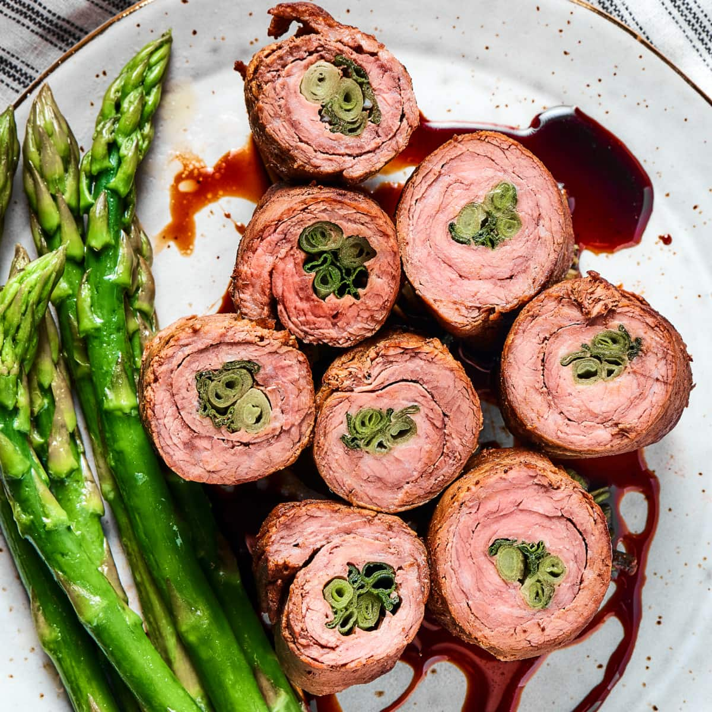

Negimaki

Negimaki
Negimaki is a popular Japanese dish of thinly sliced beef that is wrapped around scallions, then grilled or sautéed and served with a teriyaki-style sauce that doubles as a marinade.
Serve as an appetizer or a main course with steamed rice and a green vegetable or salad.
Ingrediients:
- 1/3 cup soy sauce
- 1/4 cup mirin
- 1/4 cup sake
- 2 tablespoons sugar
- 1 pound flank steak, cut in half against the grain
- 8 scallions, about 1 inch trimmed from the root ends
- 1 tablespoon vegetable or canola oil
- Toasted sesame seeds, optional
Steps:
- Stir together the soy sauce, mirin, sake and sugar in a pie dish or similar shallow container until the sugar is almost dissolved. Set the marinade aside.
- Cut the beef with the grain into 24 slices, each about 1/2 inch thick. Working in batches, arrange a few slices cut-side up on a piece of plastic wrap, leaving a few inches between each slice. Cover with another piece of plastic wrap and pound with a meat mallet until the slices are 1/8 inch thick or a little less.
- Lay 3 slices on a work surface parallel to you with the long sides slightly overlapping (by about 1/4 inch). Cut 3 pieces of scallion the same width as the beef and place them across the meat at the end closest to you. Tightly roll the meat around the scallions, starting at the end closest to you. Secure the roll with 2 toothpicks--1 placed horizontally along each of the 2 “seams." Repeat with the remaining beef and scallions. You will end up with 8 rolls.
- Place the rolls in the marinade, turn to coat and marinate, turning once halfway through, for about 15 minutes. Transfer to a plate, letting any excess marinade drain off, and pat dry (reserve the marinade).
- Heat the oil in a large skillet over medium-high heat. Add the rolls and brown on 4 sides, 3 or 4 minutes total (the middle should still be rare). When you flip the rolls the last time, reduce the heat to medium, add the reserved marinade and simmer, turning the rolls a few times, until the sauce thickens, about 2 minutes. (The meat should still be pink in the middle at this point. If you prefer your meat more well done, simmer it a little longer; just be careful not to reduce the sauce too much. If that happens, thin it with a little water.)
- Transfer the rolls to a cutting board and, when cool enough to handle, remove the toothpicks. Using a very sharp knife, cut the rolls crosswise into pieces about 1 inch wide and serve upright on plates. Drizzle with the sauce and sprinkle with sesame seeds, if using.